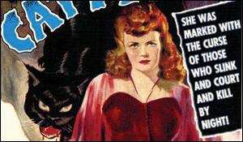

The Powercrats of Oz
|
The Loose Cannon Libertarian
They came, one by one, emerging from unseen offices and workspaces, making their way quietly along the back streets and alleyways of the American enclave known variously as Oz or Wonderland or Washington DC.

photo / heyu1021  Follow the yellow brick road
Follow the yellow brick road
Follow the yellow brick road They were the gray, boring, unimposing men and women who inhabit the capital city of the most powerful empire on earth, barely noticed and effectively forgotten. They were known only by their titles: PenPusher, PaperShuffler, Agencycrat, and LowLevel CivilServant.
But they were also the friction-reducing, life-prolonging, anti-wear, multi-viscosity grease that makes the millstone of government grind. They were, in short, the most powerful people on the planet.
Three Internet myths that refuse to die
|

Since I started writing this column in 1999, I’ve seen a thousand Internet businesses rise and die. I’ve watched the Web go from a medium you access via dial-up to the medium you carry around with you on your mobile. Still, there are three myths about the Internet that refuse to kick the bucket. Let’s hope the micro-generation that comes after the Web 2.0 weenies finally puts these misleading ideas to rest.
Myth: The Internet is free.
This is my favorite Internet myth because it has literally never been true. In the very early days of the Net, the only people who went online were university students or military researchers – students got accounts via the price of tuition; the military personnel got them as part of their jobs. Once the Internet was opened to the public, people could only access it by paying fees to their Internet service providers. And let’s not even get into the facts that you have to buy a computer or pay for time on one.
TOP picks: June 23-29
|
Tuesday | June 24
I Walked with a Zombie and Cat People at Paramount Theatre

Cat People
As part of their delicious Summer Film Series, the Paramount Theatre is playing producer Val Lewton’s classic thrillers I Walked with a Zombie and Cat People tonight. Starring Frances Dee and Tom Conway, I Walked with a Zombie is one of the greatest zombie movies of all time and incorporates elements of Charlotte Bronte’s eerie novel Jane Eyre. Cat People, starring Simone Simon, Kent Smith, and Tom Conway, is about a beautiful Serbian-born fashion designer who believes herself to be embroiled in the Serbian legend of the Cat People. It was selected in 1993 by the United States National Film Registry for being “culturally, historically, or aesthetically significant.”
7pm, 8:40pm | $7
Paramount Theatre
713 Congress Ave • Austin, TX
Comedic legend George Carlin dies at 71
|
photo / Bonnie 
Religion has actually convinced people that there’s an invisible man. Living in the sky. Who watches everything you do every minute of every day of your life. And he has a list of ten things he does not want you to do. And if you do any, any, of these ten things, he has a special place full of fire and smoke and ash and torture where he will send you to suffer and burn and scream and cry forever and ever until the end of time. But he loves you.
From “There Is No God”, You Are All Diseased (1999)


Recent comments